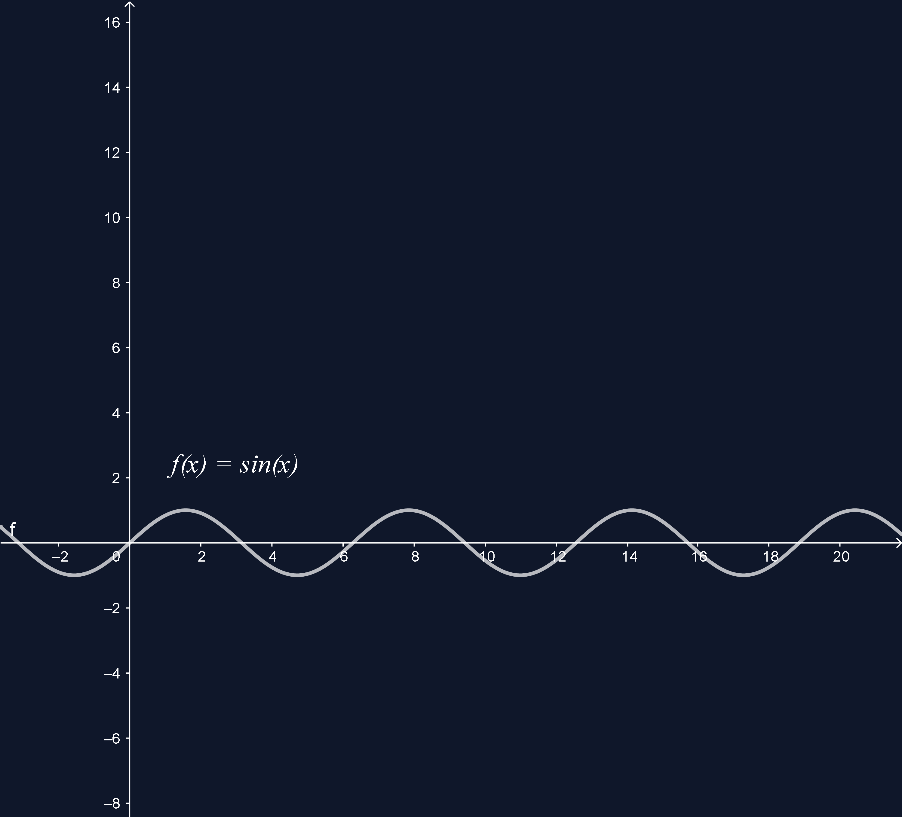

TANGENTO FUNKCIJOS
Funkcijos y = f(x) = tg x:
- apibrėžimo sritis yra intervalai:
( -90° + 180° * k ; 90° + 180° * k ), k ∈ Z;
- reikšmių sritis yra intervalas (-∞; +∞).
Funkcija y = f(x) = tg x yra periodinė. Jos mažiausias teigiamas periodas yra 180°:
tg x = tg(x + 180°);
Funkcija y = f(x) = tg x yra nelyginé:
tg -x = -tg x.
tg 240° = tg(60° + 180°) = tg 60° = √3
